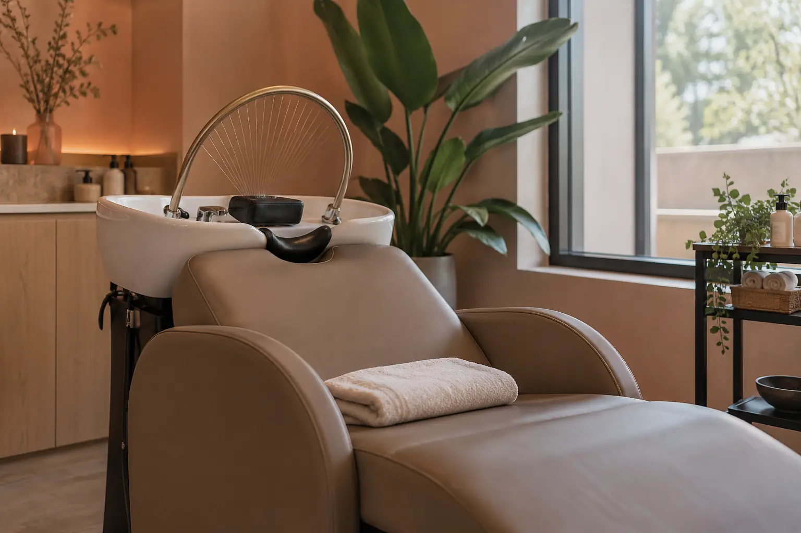

Galvos SPA: plaukų priežiūra, masažas ir ritualo apimtis
Autorius: Madbeauty redakcija · Numatyta 2026 m. gruodžio 11 d. 10:00 (Lietuvos laiku)
Palyginkite galvos SPA ritualo sudėtį ir kainą su savo tikslu: poilsiu ar plaukų priežiūros konsultacija. Pateikiamas datuotas vieno meniu pavyzdys.

„Galvos SPA“ pavadinimas nepasako, kokie darbai įtraukti. Pavyzdžiui, 2026 m. spalio 10 d. ALISPA meniu nurodė du skirtingos sudėties ritualus: viename – galvos šveitimą ir masažą, kitame papildomai įvardytas veido bei dekoltė masažas. Tai kosmetinės paslaugos apimties pavyzdys, o ne gydymo ar plaukų atkūrimo įrodymas.
Ką įtraukė vienas konkretus meniu?
2026 m. spalio 10 d. ALISPA svetainėje „Classic Head SPA“ kainavo 70 €; meniu išvardijo galvos šveitimą ir masažą, plaukų procedūrą, aromatą, veido kaukę bei džiovinimą. „Deluxe“ kainavo 90 € ir papildomai nurodė veido bei dekoltė masažą. Šiame meniu kainų skirtumas yra 20 € už nurodytą papildomą komponentą; jis nevertina paslaugų kokybės ar veiksmingumo. Meniu trukmės nenurodė.
Tai vieno teikėjo datuotas pasiūlymas, ne rinkos kaina ir ne Madbeauty paslaugos garantija. Sudėtį galite patikrinti ALISPA Head SPA meniu.
Kaip pasirinkti pagal savo tikslą?
- Jei norite poilsio ritualo, vertinkite konkrečią seką: masažą, plaukų plovimą ar džiovinimą ir kitus aiškiai išvardytus komponentus.
- Jei svarbiausia galvos odos ar plaukų kosmetinė priežiūra, ieškokite paslaugos, kurioje nurodyta, kokia priemonė ar veiksmas naudojamas ir kokiai priežiūros užduočiai jis skirtas.
- Jei norite konsultacijos, rinkitės atskirai aprašytą pokalbį apie jūsų priežiūros poreikį. Ritualo meniu pats savaime neparodo, kad į paslaugą įeina konsultacija.
Palyginimui, jei svarstote du pasiūlymus, prie kiekvieno pasižymėkite: įtrauktus veiksmus, papildomus priedus, kainą ir nurodytą trukmę. Taip matysite, už kokį konkretų skirtumą mokate, nebandydami spręsti vien iš „Classic“ ar „Deluxe“ pavadinimo.
Ritualas nėra sveikatos vertinimas
Galvos SPA kosmetinis ritualas nėra galvos odos diagnostika ar gydymas. Masažo, aromato ar šveitimo paminėjimas savaime neįrodo, kad paslauga gydo odos ar plaukų būklę, skatina plaukų augimą ar suteikia kitą sveikatos rezultatą. Jei pasiūlyme minimi eteriniai aliejai, atskirkite kvapą nuo sveikatos teiginių: NCCIH apžvalgoje nurodoma, kad aromaterapijos veiksmingumo įrodymai riboti.
Plačiau apie įrodymų ribas skaitykite NCCIH aromaterapijos apžvalgoje.
Procedūrų aprašai kataloge: Galvos SPA. Miestą ir realaus teikėjo pasiūlymą pasirinkite kataloge, kai tokia pasiūla pateikta.
Susiję gidai
Šaltiniai
- SPA VILNIUS · hamamo ritualų apimtis · www.spavilnius.lt
- NVSC · pirties veiklos sauga · nvsc.lrv.lt
- NCCIH · aromaterapija · www.nccih.nih.gov
- ALISPA: konkrečių Head SPA ritualų apimtis · alispa.lt